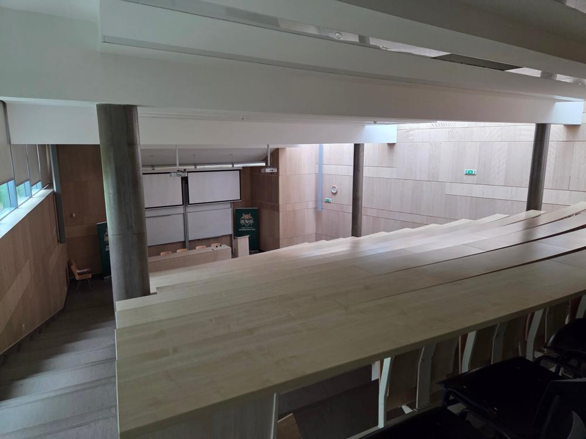
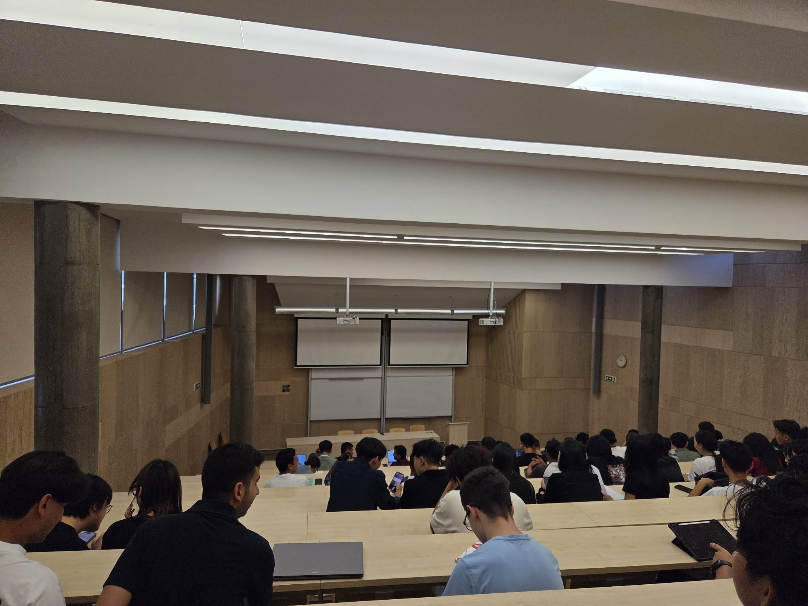
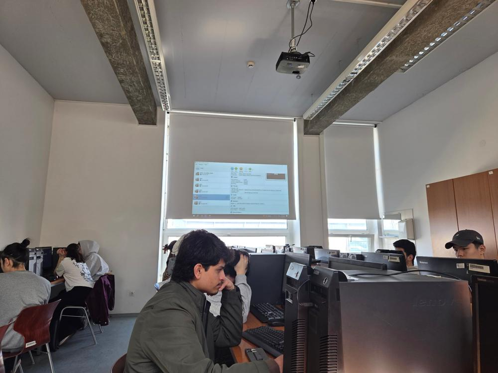
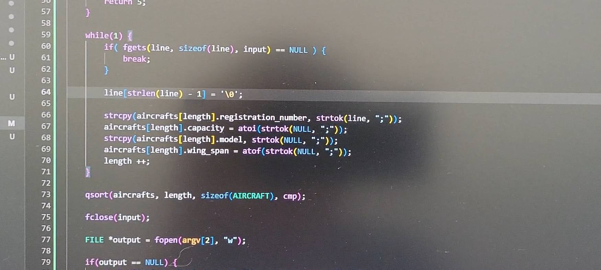

日本の大学とここが違う！ハンガリーの「授業スタイル」と教科書代0円のリアル【デブレツェン大学CS専攻】
みなさん、こんにちは。ハンガリー留学ラボのユウゴです！
留学を検討している方からよくいただくのが、「海外の大学って、具体的にどんな形式で授業が進むの？」という疑問です。
「講義と演習の違いって何？」 「やっぱり出席確認って厳しいの？」 「教科書代とか授業の準備でお金はかかる？」
今回は、僕が実際に通っているデブレツェン大学のコンピュータサイエンス（CS）学科を例に、日本の学校とはひと味違うハンガリーのリアルな授業スタイルや仕組みを詳しく解説します！
1. 「講義」と「演習」の二本柱！出席ルールの意外なリアル

デブレツェン大学の必修科目は、基本的に「講義（Lecture）」と「演習（Practice / Lab）」の2つのコマに分かれてセットで進んでいきます。
それぞれの特徴と役割はこんな感じです。
講義（Lecture）： その科目履修者全員が同じ大教室に集まって受ける大講義です。基本的に出席確認はなく、参加も自由となっています。（※中には出席を取ってボーナスポイントとして成績に加点してくれるサービス精神旺盛な教授もいます！）
演習（Practice / Lab）： 1クラス10〜16人ほどの少人数で行われます。講義で学んだ理論を、実際に手を動かして定着させる時間です。数学なら問題演習、プログラミングならパソコン部屋でのコーディングなどを行います。
「欠席4回で即落単」の厳格な出席ルール

演習コマには厳密な出席確認があります。僕が履修した演習では「欠席は学期中で3回まで」と決められており、4回以上欠席するとその時点で単位を落としてしまいます！
ただし、3回以内の欠席であれば、成績（最終評価）に悪影響が出ることはありません。評価はあくまで試験の点数で決まります。 授業によっては「企業説明セミナーに参加したら欠席1回分を免除する」といったユニークな救済措置が用意されていることもあるので、シラバスや初回の案内をチェックしておくと安心です。
2. 教授とTA（教育助手）の使い分けと距離感

大学の先生には、全体の講義を担当する「教授（Professor）」と、少人数の演習を担当・サポートしてくれる「TA（ティーチングアシスタント＝大学院生などの助手）」がいます。
僕個人の実感としては、やっぱり年齢の近いTAの方が親しみやすく、コミュニケーションが取りやすいです！
質問のしやすさ自体は教授・TAそれぞれの性格や人柄にもよりますが、演習の進行スピードやちょっとした疑問、メールでの問い合わせなどは、TAの方がレスポンスも早くて確実に返信をくれる印象があります。困った時は、まず演習担当のTAに相談してみるのが一番の近道ですよ。
3. 経済的にも大助かり！教材・教科書代はなんと「0円」

海外の大学に通っていて「これは本当にありがたい！」と感動しているのが、教科書代（教材費）が一切かからないことです。
日本の大学だと、毎学期の始めに何冊も高い専門書を買わされて数万円飛んでいく…なんて話をよく聞きますよね。
しかし、デブレツェン大学では2年生前期時点で教材を購入したことは一度もありません！
授業で使用するスライド、問題集、シラバス、連絡事項などはすべて大学のオンライン学習システム（e-learning）にアップロードされ、学生はWeb上やPDFで自由に閲覧できます。余計な出費がかからないのはお財布にめちゃくちゃ優しいですし、毎日重い教科書を持ち歩かずにノートPC1台で通学できるので、カバンも軽くて本当に快適です！
4. これから入学するみなさんへアドバイス
海外の授業スタイルと聞くと身構えてしまうかもしれませんが、渡航前に特別に気構える必要は全くありません！
大学から案内される「e-learningサイト」へのアクセス方法さえ把握しておけば、初回の授業で教授やTAが履修ルールや評価基準をていねいに説明してくれますし、その場で質問もできます。
万が一システムの使い方や教室の場所が分からなくても、周りの同級生や先輩に聞けば親切に教えてくれるので大丈夫です。
日本の高校や大学とは違った効率的で自由度の高い授業環境を、ぜひ楽しみにしていてくださいね！